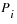
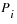

|
|
|||||||||
|
|
|
|
|
|
|
|
|
|
|
As device sizes are reduced in scale, degradations caused by various mechanisms become more of a limiting factor in circuit design. The Virtuoso® UltraSim™ simulator provides full-chip, transistor-level reliability simulations and gives the designer real-time simulation capabilities. The following key reliability simulation features are supported:
The HCI, NBTI, PBTI, aged model, and AgeMOS methods are discussed in the following sections. For more information about URI, refer to the Virtuoso Unified Reliability Interface Reference.
One important concept of the degradation model is age, which is an intermediate parameter that links the device degradation physical mechanism with the circuit reliability simulation. It quantifies the device degradation by unifying various bias conditions. Devices that are fresh have a zero age value while more degraded devices have larger age values.
Other important concepts are age (or degradation) model, aged (or degraded) model, and aging or end-of-life (EOL) simulation:

|
age model expresses the physical mechanism of a certain degradation, such as HCI, NBTI, or PBTI |
|
|
aged model represents the effects of all kinds of degradations at a particular age value (that is, a degraded model card has an age model parameter called age, in addition to the SPICE parameters) |
|
|
aging simulation performs a whole circuit calculation, such as time analysis, with particular aged models |
Figure 10-1 shows the reliability simulation flow. The input is the SPICE netlist file, in addition to reliability control statements, degradation parameters, and one of the following reliability model options: Aged SPICE or AgeMOS model parameters.
Note: The .bo0 file contains the total degradation of each device for all the age levels. The degradation for separated age level of each device is included in the result file netlist_0.level_number (where, level_number is the age level number). For example, the degradation of age level 0 for the netlist test.sp is included in test_0.level0, and age level 1 is included in test_0.level1.
Figure 10-1 Virtuoso UltraSim Reliability Simulation Flow
Ultrasim URI supports two flows, namely analytical flow and table model flow. The analytical flow is more accurate compared to the table model flow and is compatible with the RelXpert simulator. The default flow of UltraSim URI is the analytical flow. Use the age_analytical UltraSim option in the netlist or the ultrasim.cfg file in the home directory to choose the flow of your choice:
Use the following setting to select the table model flow:
Note: When using the table model flow, ensure that you set the following environment variable:
setenv RX_OLD_URI 1 (The default value of RX_OLD_URI is 0)
Use the following setting to select the analytical flow:
The MOSFET HCI model includes the following sub-models:
This model is used to generate degraded model parameters for aging simulation.
For the MOSFET under DC stress conditions, the amount of degradation is usually a function of time:
Under the DC condition,  is calculated using
is calculated using
 is used to quantify the amount of hot carrier stress.
is used to quantify the amount of hot carrier stress.
The amount of degradation is then
Using a quasi-static argument, under an AC bias condition, the  definition is modified as follows
definition is modified as follows
Using Equation 10-4 and Equation 10-5 , you can determine the amount of degradation under the AC bias condition after a given time or determine the AC lifetime .
A high vertical electrical field at a high temperature for TOX (MOSFET gate oxide thickness) 50 angstroms in length causes NBTI and makes the circuit fail immediately. The major damaging mechanism is the hole trapping and interface state generation. NBTI has become a major concern for reliable integrated complementary metal oxide semiconductor (CMOS) devices because of the threshold voltage (Vth) shift of p-MOSFET, Idsat reduction, and 1/f noise. Unlike HCI, NBTI can be a significant issue even when the drain-source is zero biased.
To simulate NBTI/PBTI, the following is needed:
The aged model is an extension of the traditional SPICE model for HCI, NBTI, or other age models. Aged SPICE model parameters are extracted from a fresh device at a number of stress intervals. These model parameters form a set of aged model files. Each file represents the transistor behavior after certain degradation, such as hot carrier stress. The amount of stress is given by the parameter calculated using Equation 10-5. During the fresh simulation, the Virtuoso UltraSim simulator calculates the  for each individual device. Using
for each individual device. Using  as a basis, the Virtuoso UltraSim simulator can construct a degraded model for each device from the aged model files. It can do this by interpolation or regression from these files in the linear-log or log-log domain of the calculation. The aged model method of calculating aged SPICE model parameter is shown graphically in Figure 10-2. The , , and values are the degraded model parameters in SPICE model files with , and respectively. The  and values are the respective model parameters if interpolation or regression is selected. Cadence recommends using interpolation in the log-log domain (default method). If there is a sign change in the parameter, linear-linear interpolation is recommended.
as a basis, the Virtuoso UltraSim simulator can construct a degraded model for each device from the aged model files. It can do this by interpolation or regression from these files in the linear-log or log-log domain of the calculation. The aged model method of calculating aged SPICE model parameter is shown graphically in Figure 10-2. The , , and values are the degraded model parameters in SPICE model files with , and respectively. The  and values are the respective model parameters if interpolation or regression is selected. Cadence recommends using interpolation in the log-log domain (default method). If there is a sign change in the parameter, linear-linear interpolation is recommended.
The Cadence AgeMOS model provides a new reliability analysis method for HCI and NBTI circuit reliability simulation, especially for deep submicron CMOS reliability modeling and circuit simulation analysis. AgeMOS is applicable to any MOS SPICE model. The AgeMOS model is a significant improvement over other reliability models in the areas of model generation, accuracy, efficiency, and consistent circuit simulation.
Figure 10-2 Calculating Aged Model Parameters
where ΔP is the change for the P parameter, P0 is the fresh model parameter, age is the degradation age value, and d1, d2, n1, n2, and s are AgeMOS parameters.
The h prefix is used to specify the AgeMOS parameters for the HCI analysis. In the NBTI analysis, the AgeMOS parameters use the n prefix. The Virtuoso UltraSim simulator generates aged (or degraded) model cards in the circuit simulation using these AgeMOS parameters.
*relxpert: +hd1_vth0 = 4.5 hd2_vth0 = 0 hn1_vth0 = 0.3 hn2_vth0 = 0.36488 hs_vth0 = 1.2777
*relxpert: +hd1_ua = 0.11812 hd2_ua = 13.12 hn1_ua = 0.2684 hn2_ua = 0.50428 hs_ua = 3
*relxpert: +hd1_ub = 372.6 hd2_ub = 1 hn1_ub = 0.44 hn2_ub = 1 hs_ub = 1
*relxpert: +hd1_a0 = 0.40162 hd2_a0 = 0 hn1_a0 = 0.08392 hn2_a0 = 1 hs_a0 = 1
vth0, ua, ub, and a0 changes with different age values. If d1 and d2 equal 0.0, the corresponding model parameter remains constant during the entire stressing. If d1 and d2 does not equal 0.0, the corresponding model parameter changes with stressing.
The AgeMOS model has the following advantages over the aged model:
Aged parameters at any age value can be calculated using Equation 10-6 (no interpolation or regression is needed).
Degraded model cards are not needed in the netlist file. Place AgeMOS parameters in the fresh model card along with the other age model parameters. The aged model parameters are calculated using the AgeMOS parameters.
The aged model parameters are calculated directly with no interpolation or regression needed.
Reliability control statements need to be included in the SPICE netlist file between the .title and .end cards. All control statements require *relxpert: at the beginning of the statement. The order of the statements in the netlist file is arbitrary. If the same control statement appears more than once, the statement that appears last overwrites all previous ones. A continuation line can be created by using *relxpert: + at the beginning of the line.
For more information about notations used to indicate how control statements are entered, see "Syntax".
Previously, the UltraSim software supported the following reliability statement formats:
|
|
*relxpert: .age =1 (*rexlpert: is the prefix) |
|
|
** .age=1 (** is the prefix) |
Starting in the 7.1.1 release, the UltraSim parser supports only the first format for reliability statements. This means that only those reliability statements that have the *relxpert: prefix will be recognized, and the reliability statements with the ** prefix will not be supported any more.
Reliability statement in Spectre format is as follows:
*relxpert: age =1 (no period before the relxpert command) in Spectre format netlist
*relxpert: age 2min 20min 200min 400min
Reliability statement for SPICE format is as follows:
*relxpert: .age=1 (there is a period before relxpert command) in the SPICE format netlist.
*relxpert: .age 2min 20min 200min 400min
The Virtuoso UltraSim simulator supports the following reliability control statements:
The default is MOS reliability simulation is not performed by the simulator.
*relxpert: .age 10y
*relxpert: .age 1y 2y 5y 8y 10y
This statement specifies the method for calculating degraded SPICE model parameters for aging circuit simulation. The interp argument is used to select the method of interpolation for aged model files and agemos specifies which AgeMOS method is used. The domain (parameter versus  ) for performing the interpolation and regression can be linear-log or log-log. Cadence recommends using the interpolation in the log-log domain method.
) for performing the interpolation and regression can be linear-log or log-log. Cadence recommends using the interpolation in the log-log domain method.
*relxpert: .agemethod interp loglog
*relxpert: .agemethod interp loglog
*relxpert: .agemethod agemos
This statement specifies aged SPICE model files for generating HCI degraded SPICE models using the interpolation method (selected through .agemethod). The mname argument is the transistor model name that applies to the aged SPICE models and it must be the same model name used in the SPICE .model statement. The fname1 argument specifies the model file containing the fresh model. All of the other model files fname2…n contain aged SPICE models. The order of the aged SPICE model files corresponds to increasing age values (that is, fname1 is the fresh model file and fnamen is the aged model file with the highest age value).
*relxpert: .ageproc nmos files=model/nmos0.mod
*relxpert: + model/nmos1.mod model/nmos2.mod
tells the Virtuoso UltraSim simulator any mname model without a corresponding .ageproc statement is not aged (that is, no degraded models are generated).
Note: Each fname file can only contain one .model statement.
This statement is used to perform the lifetime calculation for each transistor under circuit operating conditions. The criterion for lifetime is value. The degradation value can be transconductance ( ), linear or saturation drain current degradation (
), linear or saturation drain current degradation ( ), or threshold voltage shift (
), or threshold voltage shift ( ), or any other degradation monitor, dependent on how the lifetime parameters are extracted.
), or any other degradation monitor, dependent on how the lifetime parameters are extracted.
*relxpert: .deltad 0.1
Note: This option is only applicable for Cadence ageMOS model and not applicable for URI models.
|
Specifies the instances to be included or excluded during reliability analysis. |
*relxpert: maskdev include subckt = [inv] model=[nmos pmos] instance=[I1 I2 I3 I4]
The above statement includes the models that belong to the inv subcircuit and the pmos and nmos models. In addition, it includes the l1, l2, l3, and l4 devices.
If specified, this statement speeds up the aging calculation by using fresh SPICE model parameters if the transistor  is smaller than value (set the smallest
is smaller than value (set the smallest  value for which degraded SPICE model parameters are calculated).
value for which degraded SPICE model parameters are calculated).
*relxpert: .minage 0.0
A degraded SPICE model is generated for transistor .
*relxpert: .minage 0.01
Note: This option is only applicable for Cadence ageMOS model and not applicable for URI models.
Note: This option is only applicable for Cadence ageMOS model and not applicable for URI models.
This option specifies the method used to calculate age rate (see Equation 10-2 ).
Note: The equation-based calculation is denoted as e and the representative calculation is r.
This option loads a URI library and sets the uri_lib options for UltraSim reliability.
Note: Only the *relxpert: syntax is supported for specifying uri_lib. The .usim_opt syntax for specifying uri_lib is no longer supported.
|
|
library_path specifies the path to the URI library. |
|
|
uri_mode specifies the URI mode, which can be either agemos or appendage. agemos calculates degraded model parameters for degraded circuit simulation and appendage appends the age value behind the instance, and replaces the fresh circuit with the degraded circuit provided by you. The corresponding relation of fresh circuit and degraded circuit is specified in the external URI library. |
Note: This is an optional argument and its default value is agemos.
|
|
debug adds a flag into the URI library indicating whether to print the debug information in the URI. |
Note: This is an optional argument and its default value is 0.
*relxpert: .uri_lib ./libURI.so
The Virtuoso UltraSim simulation results are stored in an output file ending with the suffix .bo#, where # is the alter number used in the netlist file.
The bo# file contains a list of all significantly degraded elements, as well as each elements name, total age, degradation, and lifetime:
The degradation can be transconductance (), linear or saturation drain current () degradation, threshold voltage shift (), or any other degradation monitor. The selection of this quantity depends on the type of degradation model parameters that are extracted.
The degradation can be transconductance (), linear or saturation drain current (
) degradation, threshold voltage shift (), or any other degradation monitor. The selection of this quantity depends on the type of degradation model parameters that are extracted.
*relxpert: .age 10Y
Elem name Total Age Degradation Lifetime
*relxpert: .age 3.80518e-006Y
Elem name Total Age Degradation Lifetime
M1 .27785e-0100.00384321 2.38626
Elem name Total Age Degradation Lifetime
M1 1.27785e-0090.00674256 2.38626
Elem name Total Age Degradation Lifetime
M1 1.27785e-0080.0118292 2.38626
The  of all transistors is stored in a file with the suffix .ba#. The information stored in the file contains the following:
of all transistors is stored in a file with the suffix .ba#. The information stored in the file contains the following:
The forward mode is defined when the degradation damage is found at the first (drain) node of the transistor.
*relxpert: .age 0.000190259Y
Elem name Forward Age Reverse Age Total Age
XINV1.M1 2.67973e-008 9.25076e-010 2.77224e-008
XINV2.M1 2.62009e-008 9.95977e-010 2.71969e-008
Elem name Forward Age Reverse Age Total Age
XINV1.M1 8.03919e-008 2.77523e-009 8.31671e-008
XINV2.M1 7.86028e-008 2.98793e-009 8.15907e-008
Elem name Forward Age Reverse Age Total Age
XINV1.M1 1.33986e-007 4.62538e-009 1.38612e-007
XINV2.M1 1.31005e-007 4.97989e-009 1.35984e-007
XI3.M0 0.00287476 0 0.00287476
XI2.M0 0.00256932 0 0.00256932
XIL1.M1 2.55524e-006 0 2.55524e-006
0.00214127 8.0686e-005 0.00222196
XIL2.M1 2.55524e-006 0 2.55524e-006
0.00214127 8.0686e-005 0.00222196
In this example, there are two lines for the XIL1.M1 and XIL2.M1 MOSFETs. Each line represents each degradation model for the MOSFETs. The order is the same as the order specified by the degradation models in the fresh model card.